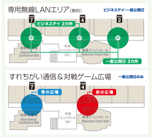
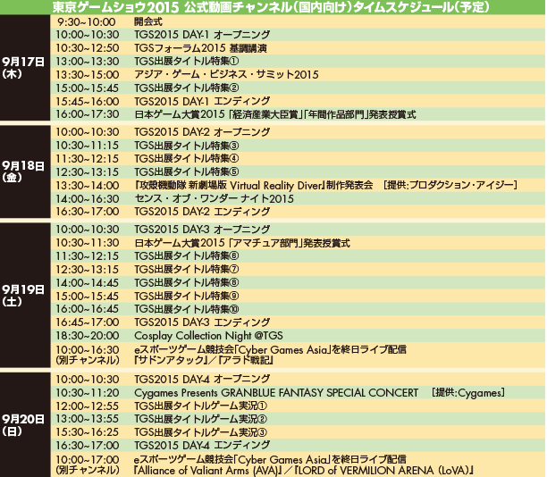

App StoreもしくはGoogle Playから、無料公式アプリ「TGS Guide」をダウンロード。アプリを起動し、トップ画面の「会場MAP」「出展社リスト」「出展タイトル一覧」の「Download」をタップすると、オンラインでデータが取り込めます。一度この作業を行っていただけば、2回目からは、「Information」をタップすることで、オフラインでアプリを利用できます。
なお、「TGS Guide」には検索機能がありますが、画像内のテキストなど、一部文言が検索対象外となる場合があります。
※画面は開発中のものです。実際のアプリとは一部異なります。
出展社のブース位置が手軽に分かる、スマートフォン（iPhone ／iPad ／Android）向けの無料公式アプリ「TGS Guide」がご利用いただけます。今年は、1-8ホールの一般展示企業について、ピンポイントでブース位置を表示したり、大規模ブースの出展内容を紹介するなどバージョンアップ。アプリを起動して、「会場MAP」「出展社リスト」「出展タイトル一覧」などのデータを取り込んでおけば、検索機能を使って、企業名からブース位置や出展タイトルなどがオフラインで確認できます。ぜひ、展示ホールに入る前にApp StoreもしくはGoogle Playから「TGS Guide」をダウンロードしてください（１-8ホール2階の無線LANエリアなどをご利用ください）。 なお、アクセスが集中すると、ダウンロードしにくくなる場合がありますので、時間をおいて改めて試みてください。
デジタルサイネージは、大規模出展社16社が発表する試遊待ち時間や配布物情報のほか、TGS事務局からのお知らせを表示しています。1画面に4社の情報を掲載し、15秒ごとに切り替わっていきます。設置場所は全9カ所で（MAP参照）、2～8ホールの出入り口付近（①～⑦）、9ホール南側出入り口付近（⑧）、10ホール主催者コーナー、物販コーナー付近（⑨）にあります。お目当てのブースの状況を事前にチェックすれば、効率よく会場を歩けます。
表示対象出展社（50音順）
WARGAMING JAPAN、エレクトロニック・アーツ、カプコン、グリー、コーエーテクモゲームス、コナミデジタルエンタテインメント、Cygames、Supercell、スクウェア・エニックス、セガゲームス、ソニー・コンピュータエンタテインメント、DMM.com、闘会議、バンダイナムコエンターテインメント、ブシロード、YouTube
展示会場1-8ホール内では、無線LANの使用を禁止しています。それにともない、1-8ホール2階の中央モールに、TGS来場者専用の無線LANエリア（無料）を3カ所（ビジネスデイは2カ所）設置します。無線LAN通信をご希望の方は、展示会場出口（2階）から1-8ホールの中央モールに出ていただき、図にあります無線LANエリアへお越しください。IDとPWを入力いただければ、PCでも携帯ゲーム機でもご利用いただけます。
また、幕張メッセによる「Makuhari Free Wi-Fi」サービス（無料）も、1-8ホールの2F中央モール、9-11ホールの2Fエスプラナード（全域）でご利用いただけます。ただし、メールアドレスの登録などが必要になります。このほか、待ち合わせに便利な「すれちがい通信＆対戦ゲーム広場」【赤の広場】（4ホール2階）、【青の広場】（7ホール2階）もご用意しました。それぞれの色のカーペットが敷いてありますので、ご活用ください。

来場者が多い一般公開日（19～20日）は、小学生以下の子どもと保護者が安心して休めるファミリーコーナー専用ラウンジを3ホールに設置いたします。1ホールのファミリーコーナー同様にご家族でご利用ください。また、一般公開日は３ホールに、一般来場者が利用できるラウンジスペースも用意。日本ゲーム大賞ブースの東側スペースには、TGS公式グッズ販売コーナーもあります。
※写真はイメージです。
世界各地、様々なジャンル・規模で大会が開催されているeスポーツは、日本人プロゲーマーが海外で活躍するなど、国内でもますます注目が高まっています。今年で4回目の開催となる「Cyber Games Asia」は、日本を含むアジア地域からトップ選手やチームを招へいし、東京ゲームショウの会場内でeスポーツを繰り広げる国際的な大会です。アジア地域のトップレベルの選手たちのレベルの高いゲームプレイをお楽しみいただけます。

今年は、競技ステージを2つに拡大し、1日2競技タイトル、2日間で合計4競技タイトルの熱戦を繰り広げます。競技タイトルは、eスポーツの人気ジャンル、FPS（ファースト・パーソン・シューティング）やRTS（リアル・タイム・ストラテジー）など、各ステージで人気のゲームタイトルの試合をご覧いただけます。
東京ゲームショウ2015では、「TGSフォーラム2015基調講演」から、「日本ゲーム大賞2015」、「Cosplay Collection Night @ TGS」、eスポーツゲーム競技会「Cyber Games Asia」まで、会場からインターネットライブ配信を行う「公式動画チャンネル」を開設。国内向けには「niconico（ニコニコ）」が、海外向けには「YouTube」がそれぞれ番組を制作・運営します。ぜひご覧ください。

11ホールに設けられたフードコートでは、8つの店舗が個性あふれるご当地メニューや、人気のおすすめメニューをご用意して皆様のお越しをお待ちしています。ゆったり座れるベンチシートで、東京ゲームショウならではのお食事をお楽しみください。
また、ドリンクコーナーはビジネスデイを含め、開催期間中を通じて3ホール北側にあります。フードコートとあわせてご利用ください。
一般公開日に、9-10ホールの一部、および、4-6ホールの屋外南側（海側）の一部にコスプレエリアを設けます。コスプレエリアでは、様々なゲームキャラクターに扮したコスプレイヤー達に会うことができます。コスプレエリアまでぜひ足をお運びください。
東京ゲームショウの会場から徒歩約10分の場所に位置する「イオンモール幕張新都心」。仕事体験テーマパーク「カンドゥー」や東映ヒーローが大集合する「東映ヒーローワールド」、新コンセプトの劇場「よしもと幕張イオンモール劇場」といった体験型施設はもちろん、ハイセンスなファッションブランドなど約360のショップが出店する国内最大級のショッピングモール。
そんな「イオンモール幕張新都心」とTOKYO GAME SHOW初のコラボ企画として、こだわりのグルメが集結した飲食店との連携企画を実施。会場で配布する公式ガイドブックをレストラン、フードコートなど各飲食店舗で提示すると、いろんな特典が受けられます。
※一部、実施していない店舗がございます。
一般公開日の9/19、9/20の2日間、10ホールに設けられた特設会場で大抽選会を実施します。
抽選で当たりが出れば、お好きな品をプレゼント！
出展社の人気商品をゲットするチャンスです。ぜひ、ご参加ください。
| 抽選方法 | ガラガラ抽選機を回し、当たりが出ると下のリストの中から1点、お好きな景品を選ぶことができます。 ※抽選に参加できるのはお一人様1回です。（ダブルチャンスあり） ※抽選順により、ご希望の品物がなくなる場合がございます。 |
|---|---|
| 開催概要 | 9月19日（土）10:00～16:30（最終受付 16:15） 9月20日（日）10:00～16:30（最終受付 16:15） |
| 会場 | 10ホール TGS大抽選会場 |
「ゲーム歴史博物館」では、家庭用ゲーム機の誕生から現在まで、ゲーム業界の歴史をたどることができます。その時々の株価や為替、流行語やヒット曲といった時事情報とともにゲーム業界の移り変わりがパネル展示されています。歴代の日本ゲーム大賞受賞作品や、ゲーム機のリリース情報も掲載されているので、ゲームがどのように進化してきたのか、世相とともに理解できます。興味のある方は、10ホールのコーナーまでぜひ足を運んでください。

日本のポップカルチャーを海外に情報発信する「Tokyo Otaku Mode(TOM)」。東京ゲームショウのメディアパートナーでもあるTOMが、海外のゲームファン目線で、会場からライブ配信します。世界で人気のゲームクリエーター、プロゲーマーなどを特設スタジオに招き、トークセッションやゲーム対戦などを行うほか、東京ゲームショウの熱気をレポートするコーナーも予定しています。
一般公開日の2日間、10ホールの特設スタジオ（和室風の部屋が目印！）からライブ配信をお届けします。9〜11ホールにお越しの際は、ぜひ、Tokyo Otaku Mode LIVE STREAM HUTにもお立ち寄りください！
| 放送時間 | 9月19日（土）・20日（日）10:00〜16:00 |
|---|---|
| 視聴方法 | 「YouTube at TGS」（http://YouTube.com/TGS）から「Tokyo Otaku Mode」を選択 |
一般公開日の2日間（19日～20日）、「東日本大震災復興支援チャリティーオークション」を1ホールイベントステージで開催します。出展社の皆さんから提供いただいた商品は、3ホールの「日本ゲーム大賞」ブースに展示しています。今年もレアアイテムが多数出品しますので、ぜひ皆さんで参加してください。
また、東日本大震災復興支援の募金箱を日本ゲーム大賞投票所（全9カ所）の近くに設置しています。皆様のご協力をよろしくお願いいたします。
日本最大のコスプレコミュニティサイト「Cure」がお届けする「動くコスプレ」のステージショウ。コスプレでのパフォーマンス、ランウェイショウありの新しいコスプレの魅力をお楽しみいただけます。
出演するコスプレイヤーも日本や世界で活躍するカリスマコスプレイヤーが勢ぞろい。ご存知のキャラクターからレアなキャラクターのコスプレまで見応えのある90分。新感覚のコスプレショウを是非ご覧ください。
TGS2015オフィシャルドリンクスポンサーのモンスターエナジーは、2002年にアメリカで発売して以来、全世界116ヶ所の国と地域で販売しているエナジードリンク。モータースポーツ、アクションスポーツ、音楽シーンのみならず、ゲームシーンにもワールドワイドで積極的なサポートを行っています。 当ブース（5ホール北＆サイバーゲームスアジア会場）では、モンスターエナジー、モンスターウルトラのサンプリング、エレクトロニック・アーツ「Need For Speed」やWARGAMING「World of TanksBLITZ」の試遊、さらにもれなくグッズが当たるSNSキャンペーンなど、さまざまな企画を実施中！
一日中、広い東京ゲームショウ会場を見て回っていると、携帯電話やスマートフォンの電池が心許なくなっているはず。そんな時に役立つのが無料の携帯電話充電コーナー（協賛はNTTドコモ）。今年は7ホールの北側の壁沿いに設置された同コーナーは、フィーチャーフォンからスマホまで、さまざまな携帯電話の充電サービスが無料で受けられます。お気軽にお立ち寄りください。
TGS2015公式グッズは、Tシャツやタオル、トートバッグなど、形部一平氏が描いたメインビジュアルを基にデザイン。そのほかにも、ワークキャップやマグカップなど充実のラインアップ。さらに人気クリエイターBAN-8KUさんが手がけた「Tokyo Otaku Mode」とのコラボTシャツも用意しました。TGS公式グッズ販売コーナーは、10ホールの物販コーナーほか、2Fコンコース5ホール前、屋外中央広場、3ホール（一般公開日のみ）にあります。
今年新しくできた「ファミリーコーナープラス」は、中学生以下だけが入場できる特別コーナー。中学生以上の一般来場者から離れて、中学生以下の君たちだけが思い切り人気の最新ゲームをプレイできる。ぜひ、立ち寄ってね！
東京ゲームショウ2015では、今年も一般公開日に幕張イベントホールでライブイベントを開催。2年連続2回目となる「ミルキィホームズ」が、9月19日（土）に『ライブ ミルキィホームズ 秋の大運動会』を実施します。 劇場版アニメの公開も決定し、ますます目が離せないミルキィホームズ！ イベントホール前広場ではグッズ販売も行います!!
9月20日（日）に『黒子のバスケ』のライブイベント『KUROBAS CUP 2015』を開催します。併せて、幕張イベントホール横の西広場では、関連グッズの販売も行います！

2002-2015 CESA / Nikkei Business Publications, Inc. All rights reserved.